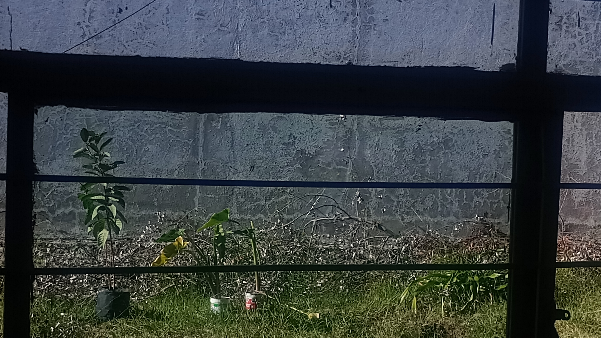

Nuestro Huerto Completo
Un espacio sustentable dedicado al cultivo orgánico en equipo. En este ecosistema integramos diversas plantas, compostaje y abonos naturales para mantener la tierra fértil y promover la biodiversidad local.
Espacio agroecológico y cultivo natural del grupo

Un espacio sustentable dedicado al cultivo orgánico en equipo. En este ecosistema integramos diversas plantas, compostaje y abonos naturales para mantener la tierra fértil y promover la biodiversidad local.
El árbol central de nuestro cultivo. Le brindamos cuidados especiales mediante podas de formación, riego controlado y fertilización limpia para asegurar una gran floración y frutos jugosos en cada temporada.

Aromática y resistente, sus flores púrpuras son una de las fuentes favoritas de néctar para abejas y mariposas durante toda la primavera y verano.

Su gran flor central produce abundante polen y néctar, atrayendo abejorros y diversos insectos polinizadores que mejoran la salud de todo el huerto.

Una planta perenne ideal para el huerto. Florece en diversas épocas del año, ofreciendo alimento constante a polinizadores cuando otras plantas no están en flor.